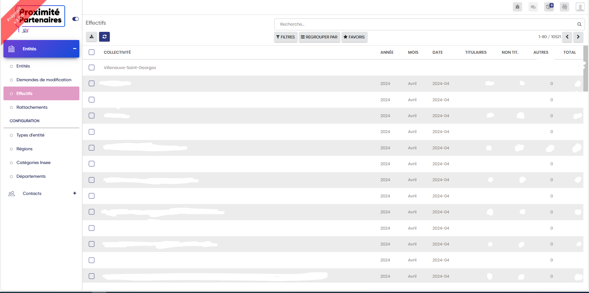
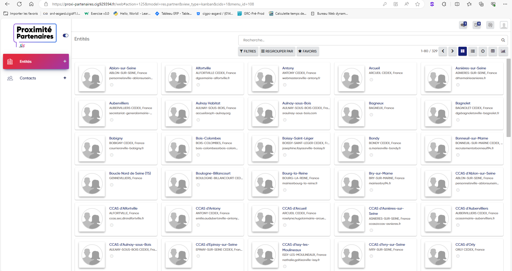
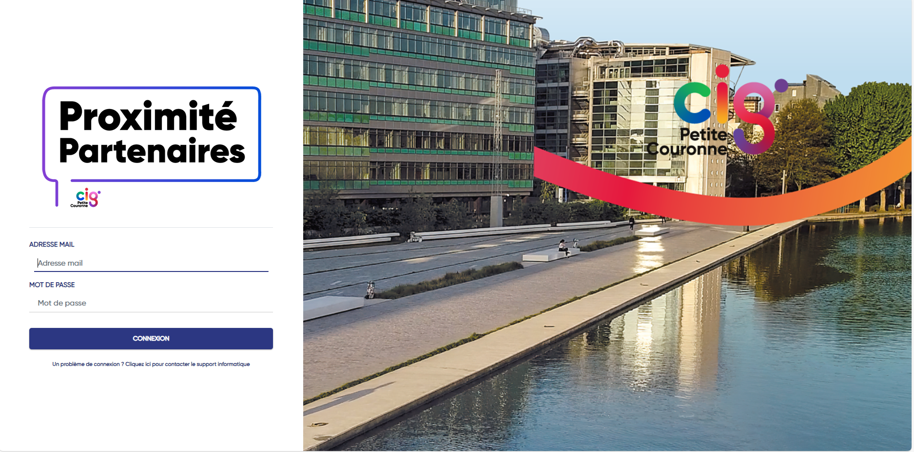
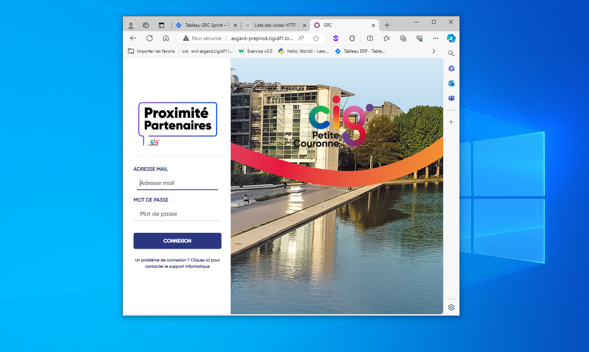
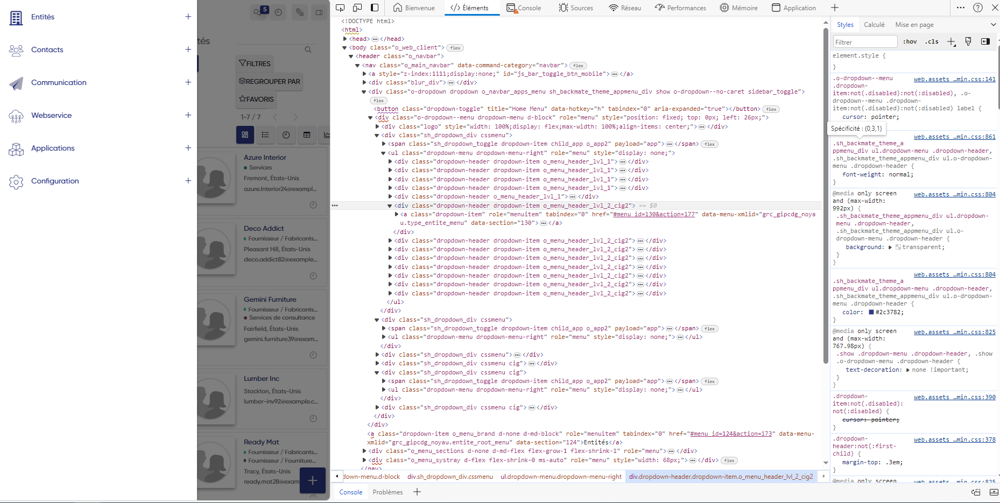
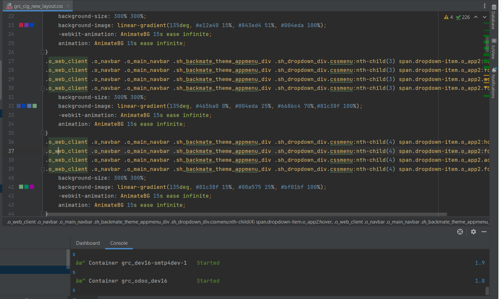
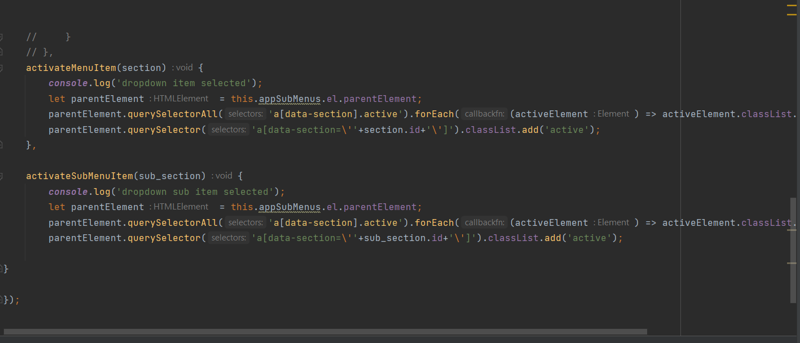

Projet n°1:
Mise à jour de la nouvelle charte graphique
Le CIG petite couronne à mis en place une nouvelle charte graphique, ma mission à donc été d'adapter l'application Proximité Partenaire à cette nouvelle charte graphique.
Pour y parvenir, j'avais carte blanche, je proposais donc plusiseurs maquettes.
Jusque au moment ou j'ai eu l'idée d'introduire des animations, qui feraient déroulé les différents couleurs de la charte graphique sous la forme d'un dégradée.

J'ai ajouté aussi le nouveau logo situé en haut à gauche de la page.
Lors de ces modifications j'ai du faire face à plusiseurs problèmes, tels que le fait que l'application soit réaliser avec Odoo et donc à déjà certains pré-ajouts qu'il à donc fallut contourner en CSS.

Je me suis aussi occupé sur la page de connexion; de retirer un filtre présent nativement sur l'image de droite, ainsi que placer le nouveau logo de manière plus grosse est plus imposante sur cette page.

Cette page est responsive, et lors du rétrecicement de cette page, un zoom est effectué sur le logo de l'entreprise.



